A few years ago, my sister and I decided to plant a stand of corn in addition to the regular garden on her farm. This entailed tilling a 50' x 15' area, hoeing the dirt up into about twenty mounds, shaping the mounds for holding water, punching four holes in each mound, and, finally, placing a few kernels in each hole. Then we planted beans among the mounds to try and crowd out the weeds.
That was a lot of work, but we were bolstered in our effort by the belief that this corn would taste much better than the stuff from Food Lion. Through the spring and early summer, my sister watered it and tried to keep keep it under control. But she could only work a couple of hours a day and weeds work 24, so eventually they got the upper hand. In the end, most of the corn stalks didn't even come up to my shoulder, and any ears that appeared were stunted dwarves.
Then, one day, my sister called and was very excited. The conversation went like this:
"Dave, I found a good ear of corn in the garden!"
"Great! We can have it on Sunday."
"Nope. I stood in the field and ate it."
That's the way it goes sometimes: you work like hell and end up with squat. And I wonder how often that happens? It seems like every day we're inundated with stories of unparalleled success ("Supercomputer built from an old Philips AM radio, a salt shaker and a carefully folded water bill from 1983!"), but how many projects lie like crashed junkers alongside the road for each technological Cadillac that effortlessly takes the checkered flag? And I'm not talking about the ideas we all have, think about for a few days, and then abandon when the next one comes along. I'm talking about the ideas we really work on, put money into, devote weeks to, but can't quite push over the finish line. I'm sure there must be a lot, but we hide them away and don't talk about them, like they were children who scored less than 1000 on the SAT.
Well, for everyone who has had a failure like that, let me tell you about one of mine...
It all started innocently enough on April 13th when Jayson Tautic of TAUTIC.COM sent a tweet about his upcoming TCM8240 breakout board. The TCM8240 is a Toshiba camera module with a 1.3 Mpixel CMOS sensor. I asked Jayson how he was going to test it. Jayson sells a lot of breadboard power supplies and PIC microcontroller breakouts that can be tested with multimeters, scopes and such, but the TCM8240 is a different beast because it likes to pump out pixels at megahertz rates. That's difficult to capture using a microcontroller.
I had some experience capturing images from NTSC sources using FPGAs and the Philips SAA7114. I took a quick look at the TCM8240 datasheet, said "That looks easy enough!" and contacted Jayson with an offer to assist with testing his board. (The phrase "That looks easy enough!" is right below "Hey! Watch this!" in the list of things said right before something goes seriously wrong.) Jayson agreed to send me one of his boards once he got them and had the TCM8240s mounted. I agreed to connect one to a XuLA FPGA board and see if it could capture images.
On April 22nd, Jayson emailed me about a problem he was having with mounting the TCM8240 on the breakout board: the plastic lens housing was melting when he sent them through the reflow oven! Here's an example of what the lens looked like after reflow:
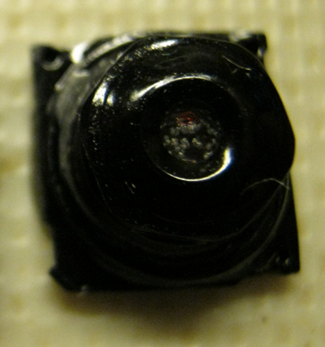After discussing it, we decided to proceed with the testing despite the TCM8240's "cataracts". At least I could check the interface between the TCM8240 electronics and the FPGA.
I got two of Jayson's TCM8240 modules on April 26th. I decided to remove the melted lenses so the CMOS sensor could get more light. I promptly destroyed one of the modules by ripping off both the lens and the underlying ultraviolet filter. I was a bit more careful on the remaining unit and managed to get just the lens off. Here's what they looked like afterwards. The module on the left has both the lens and UV filter removed; you can see the bare CMOS sensor. The module on the right has just the lens removed; the UV filter still covers the sensor.
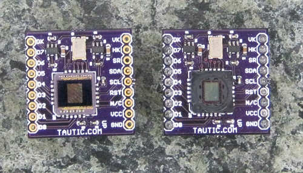To test the TCM8240, I used the same architecture (and most of the VHDL) as I had in my previous SAA7114 project. The TCM8240 dumps pixels into a FIFO inside the FPGA. The FIFO feeds into the external SDRAM on the XuLA board where the pixels are stored. At the same time, pixels are being read from the SDRAM and placed in another FIFO that feeds a VGA interface connected to a monitor. This lets me see the image captured by the TCM8240 in real-time. (The external SDRAM is not a two-port device. There is a dual-port module I built into the FPGA that time-slices access to the SDRAM for the TCM8240 and VGA interfaces. The FIFOs are needed to smooth out interruptions in the data flow when either the TCM8240 or VGA module cannot get immediate access to the SDRAM.)
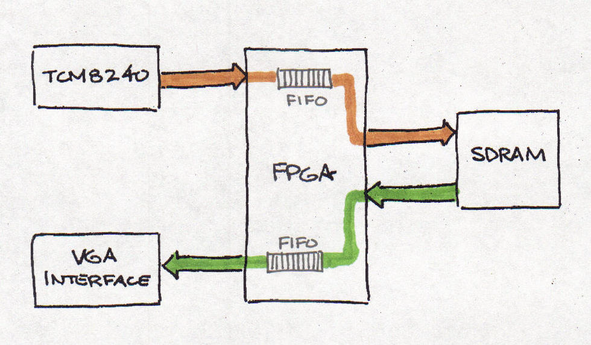The image datapath wasn't a big concern to me.It had all been worked out years ago for the SAA7114. The TCM8240 has a similar interface to the SAA7114, so the VHDL needed just a moderate number of alterations. What did concern me was the initialization of the TCM8240. In the old design, the SAA7114 was initialized through the parallel port connecting the FPGA board to a PC. There is no parallel port interface on the XuLA Board, so the initialization interface had to be completely re-written. Here's what I did:
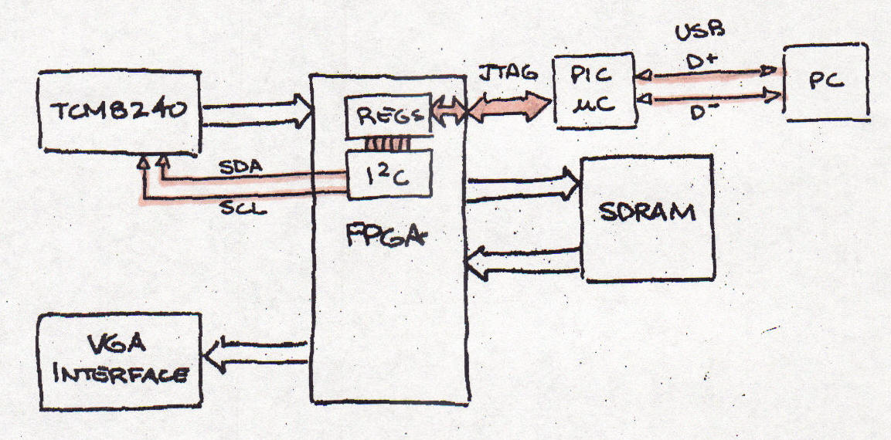I use a PC to manage the initialization of the TCM8240. The parameters are sent over a USB link to the XuLA board. The PIC microcontroller on the XuLA accepts the USB packets and sends them to the FPGA's JTAG port. The serial JTAG bits are transformed into a parallel register read/write interface by a custom module I wrote. This module reads and writes registers in an I2C module I downloaded from OpenCores. The TCM8240 has a set of 256 byte-wide configuration registers that are accessed through this I2C interface.
Now, there are four separate types of data links in this initialization chain and probably eight-million places for the data to die. I hadn't used the OpenCores I2C module before and the few examples given in the manual were rather opaque, so that was a potential trouble spot. And my custom JTAG-to-register module hadn't been tested very much, so more trouble could be waiting there. And the PIC firmware had to be re-worked a bit to manage the USB-to-JTAG translation, so errors could have been made there.
It turned out there were errors in multiple places. I just had to methodically work through the links, fixing errors as I went. I started with the USB-to-JTAG link and executed simple test cases like reading the FPGA device identifier. The PIC would make mistakes if the JTAG packets stretched across multiple USB packets. I fixed that, and then the PIC would fail if the JTAG packet fit inside a single USB packet. And so on and so on... I kept fixing microcontroller code until this part of the link seemed to be working.
Luckily, the JTAG-to-register module worked pretty much right away, so I could move on to using the OpenCores I2C module to write and then read registers in the TCM8240. That didn't work at all: it always read all zeroes or ones. So I slowed the I2C clock way down, fed static data patterns through it and looked at the clock and data lines on a scope. Then I read the examples from the I2C core manual, compared them to other I2C tutorials, and pondered when the I2C status from the core should be queried. Finally it seemed all the waveforms were correct, but the TCM8240 wasn't responding to them. It was continually NACK'ing every I2C transaction.
I turned my attention to the TCM8240. I started by assuming that I2C writes were working and it was getting the register data, but that I2C reads were blocked somehow. But I ruled that out when I was unable to make the TCM8240 do anything by initializing its registers. I couldn't enable the data outputs, change the clock frequency using its internal PLL, etc. While doing these tests, I also noticed that the I2C lines had activity on them even when the FPGA wasn't writing to the TCM8240. The TCM8240 is a slave device and shouldn't initiate I2C bus transactions on its own. So something was screwy with the chip.
I checked the voltage levels for the TCM8240 and they were fine and had no appreciable noise. The clock signal to the chip was clean and at the right frequency. I had the TCM8240 reset input tied low, so I tried pulling it high to give it a clean reset while power was applied. Suddenly, the NACKs on the I2C bus disappeared and the FPGA began writing and reading registers on the TCM8240! I had mistakenly assumed that an input labeled "RST" in the datasheet would be active-high and had to be pulled low to release the reset. Instead, it's active-low. This was to be a portent of things to come.
Now that I had the initialization chain working, it was time to load the TCM8240's registers and see if any data popped out. (I wasn't expecting much, what with the melted lens and all.) So I went to find the appropriate register values and, for the first time, really looked at the Toshiba datasheet. Wow, what a piece of shit! There's an address map of the 256 registers with all their mnemonics and that's it! No register descriptions, no list of register values for common usage, nothing. To be fair, some of the mnemonics are easy to figure out, like "LRINV" does a left-to-right inversion of the image. But how about "PBC3LV"? What does that do? Or my all time favorite: "HDCMH_NC".
I did find a note from Toshiba that lists a few register values for common applications. But here's the thing: some of the register addresses given in the note correspond to unused locations in the register map that the datasheet says "are not able to read and write via I2C bus". In particular, I'm talking about addresses 0x0E, 0x11 and 0x14. These are important registers for setting the size and resolution of the image output by the TCM8240, but the datasheet says they don't even exist.
The next resource I tried was the Sparkfun forum discussion about the TCM8240. This had twenty-seven pages of messages starting in 2008 between people trying to get the TCM8240 to work. There appeared to be a lot of dissatisfaction. On page thirteen, I found a few lists of register values said to give reasonable output. Here's one (I added a "*" before every register that is not listed in the TCM8240 datasheet):
Address Data Comments *0x0B 0x00 White Line OFF 0x58 0x20 Exposure Time 0x05 0x00 Frame Rate Quarter 0x1A 0xFF 0x1B 0xB3 *0x11 0x4A *0x14 0x33 0x04 0x0D RGB, 352x288, OUT ON 0x1F 0x0B 0x1E 0xC3 *0x0E 0x1E
Of particular note is the register at address 0x0B. This register is not listed in the datasheet or application note. It was found by one of the forum participants by writing sequentially through the addresses until something interesting happened. Even with these values, the captured images he got were over/under exposed and had a purple/pink cast to them.
By May 31st, I could capture the output of the TCM8240 and display it on a VGA monitor (the test setup is shown below), but the result was just a pinkish blob because there was no lense. I could wave my hand over it and see the blob change as the amount of light reaching the sensor varied, but that was about it. I asked Jayson to send me a hand-soldered TCM8240 module with a good lense so I could see what type of images I was getting.
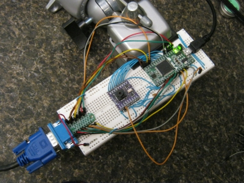While waiting for the fully-functional TCM8240 module, I went looking for information on the TCM8230 chip. Some of the participants in the Sparkfun forum had moved to this part and had success after giving up on the TCM8240. I thought the TCM8230 datasheet might give me some ideas about what some of the TCM8240 registers were for. I mean, they've got nearly the same part numbers, right? There must be some overlap in how they function.
Well, the TCM8230 datasheet didn't shed any light on the TCM8240. The register maps are very different, and there's no explanation of the registers in the TCM8230 datasheet, either. So that was a dead end.
Next, I went looking for other Toshiba camera modules. I found the newer TCM9000 series but all the datasheets were under NDA. No help there since anything I develop is going to be open source. While doing this, I also found mention of the Standard Mobile Imaging Architecture (SMIA) for camera modules. I thought that might tell me something, but Toshiba didn't commit to it until 2005 and the TCM8240 had been out for a while before that, so this was probably another dead end.
Finally, I called a local Toshiba representative to ask if they had a current TCM8240 datasheet. She said she would check and get back to me. I haven't heard anything, yet. They must have lost my number or had a family emergency or something.
I got a fully functional TCM8240 module from Jayson on June 7th. I must admit I let it sit for a while before installing it. During the interim, I was writing code for the "Register Explorer". Previously, if I wanted to test the effect of changing a register value, I had to do the following:
Even if this procedure only takes thirty seconds, that makes it impossible to flick a register value back-and-forth and interactively view how the captured image changes. Register Explorer was built to speed-up the changing of registers in the TCM8240. It consists of a DLL for reading and writing registers through the XuLA USB link coupled with a GUI written in Python/wxPython. Here's what the GUI looks like:
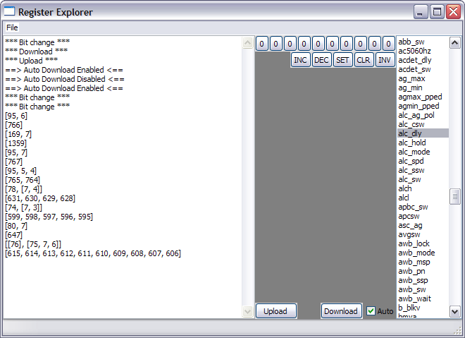The list at the right of the window has all the known registers of the TCM8240. I can highlight a register and then use the buttons in the middle pane to toggle bits and perform other operations on them. Then I can download to the TCM8240 and see what happens. And I can save and recall the entire set of registers in a file so I can keep interesting configurations.
Using Register Explorer and the new TCM8240 module, I started debugging the imaging path. Jayson recommended that I enable the color bar mode (I didn't even know it had a color bar mode). When I did, the VGA monitor displayed the image shown below in (a). Then I uploaded the image from the SDRAM of the XuLA and wrote a small utility to translate it into the PNG image shown in (b). For comparison, a set of SMPTE color bars is shown in (c). All of these images look like they're in agreement. This showed I could get correctly formatted data from the TCM8240 and that the 2.8V digital levels output by the camera are compatible with the 3.3V I/O levels of the XuLA board. Also, the VGA output matched the image data stored in the SDRAM, so that interface works as well.
 |
||
| (a) | (b) | (c) |
Next, I disabled the color bars and loaded the registers with the values found on the Sparkfun forum. The result is shown below in (a). The entire image has a bluish cast. I tried every register setting to normalize the picture, even the automatic white-balance. (Of course, I couldn't tell if I enabled the AWB correctly. I can hardly get that feature to work on a modern camera with complete instructions from the manual.)
In desperation, I switched the red and blue components and got the picture shown in (b). This gave the image a reddish cast, but at least the colors were nearer to what they are in reality.
| 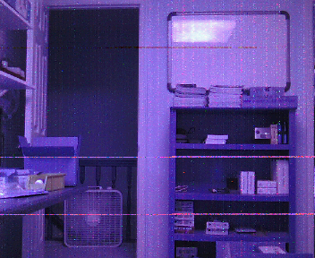 | 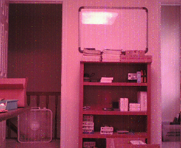 |
| (a) Image with default RGB order | (b) Image with red & green switched. |
Jayson sent me a link from a Japanese website where the writer was using the TCM8240 in a camera that hangs around a cat's neck. Reading some of the code in that post, I saw that they were doing the same thing: reversing the red and blue components of each pixel. Now I like an easy fix as well as the next guy, but the problem with switching red and blue is that the colorbar output will no longer match the SMPTE standard. In that case, what's the use of having the color bar mode at all? Plus, is the datasheet that bad that I can't even trust the bit-ordering of the pixel color?
Aside from the red<->blue problem, there was also a noise problem in the image path. The color bar images were clean, which means the frame grabbing and VGA display modules in the FPGA were not injecting any noticeable noise. But when the TCM8240 captured real images, there were spots and blemishes. And these spots were at fixed locations in the image field. In image (a), there is a red dot visible in the second bookshelf from the top, near the two white boxes. Panning to the left (b), the bookshelf moves rightward, but the red dot maintains the same position in the image field. There are many additional spots that do the same thing. So there is some problem in the image path. (I checked the TCM8240 power supplies and they were clean, but I doubt the defects resulted from electrical noise because they occurred in the same position on each frame.)
| 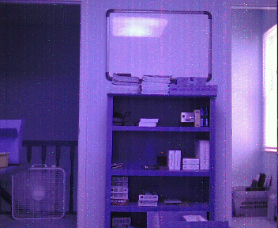 | 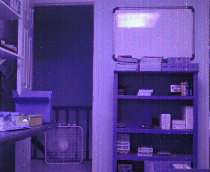 |
| (a) Original scene. | (b) Scene captured after panning left. |
At this point it was July 9th and I assessed the project as follows:
Looking at where I was and factoring in my estimate of the future revenue if things ever started working, I decided to take this project out back and shoot it in the head. Jayson concurred, so I packed it into a drawer where it can be resurrected if conditions warrant. (What's more likely is that this stuff will eventually migrate to a cardboard box in a closet or get recycled into something else.)
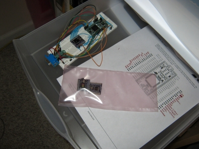Now, after every plane crash there's at least one good piece of yard art. So what did I get out of this project? Here's my list:
Would I have undertaken this project knowing the effort it would take and what I would get out of it? Well no, of course not. Who would? But projects aren't like books where you can peek at the last page to see how everything turns out. And what fun would that be, anyway? You spin the wheel, drop the ball and you either win big or lose big. It's the unknown that makes it fun.
So this project didn't turn out. That's the way it goes. Maybe you've had one or two projects that did the same. Maybe my story will make you feel better about what happened to you, maybe not. As for me, this project is done and over.
Tomorrow, I'll start another one.
Comments
New Comment